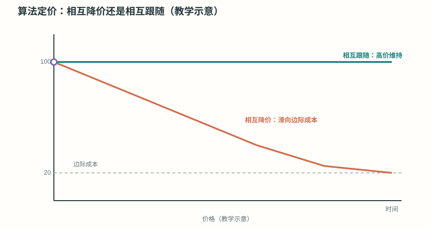
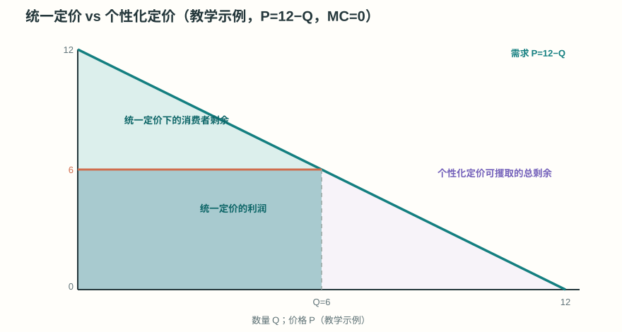

CHAPTER 27 · MICROECONOMICS
人工智能与微观经济学
AI 是一种通用目的技术：它同时改变市场的信息、决策与匹配方式。本章讨论算法定价与合谋、大数据杀熟、对劳动力的影响，以及用大语言模型研究经济决策的边界。
当决策者是算法
过去两百年，经济学研究的是人的决策。现在多了一种决策者：它疲劳度低、反应快、不受情绪影响，能几乎实时地根据数据调整价格。定价、库存、信贷审批——越来越多的经济决策由代码完成。
本章的问题是：当“决策者”不再是完全理性的人、也不是有限理性的人，而是被训练来最大化目标的算法时，我们在前几章学到的工具还够用吗？答案是需要看具体机制：有些结论依然成立，有些则要重写。
通用目的技术
经济学把 AI 视为一种通用目的技术 general-purpose technology——像电力和蒸汽机一样，它不是解决某一个具体问题，而是为整个经济提供新的基础能力。它对市场的影响至少有三个层面：
- 信息层面：降低搜索与处理信息的成本。消费者能快速比价，企业能实时监控竞品价格，市场更“透明”。
- 决策层面：算法替代人做出更多决策，改变决策的频率与依据（更快、更频繁、更数据驱动）。
- 匹配层面：推荐与搜索提高了买方与卖方的匹配效率，使市场更“厚”（更多交易发生）。
这三点改变了约束条件：传统模型里的“信息不完全”与“有限理性”在 AI 时代被重塑。但在有些场景，AI 也可能放大而不是消除问题——下面两个例子就是。
算法定价与算法合谋
在寡头市场（第 17–18 章）中，企业可以通过合谋协调定价；传统合谋需要企业之间沟通，通常在多数国家违法。但如果“协调”不是由人完成，而是由自动定价算法在观察与响应中形成呢？这被称为算法合谋 algorithmic collusion。
机制并不神秘：若每个算法都被设定为“跟随或略低于竞争者”，价格可能维持在高位而无需价格战；若算法的目标更短视，价格则会滑向边际成本。下面这张图把两条路径画在同一张时间轴上。

实验研究提供了证据：在重复定价的仿真中，仅以自身利润为目标的算法有时会在没有沟通的情况下收敛到接近合谋的高价。Calvano 等（2020）的研究说明，算法不必“想合谋”，也可能从试错中“学会”高价的后果。
个性化定价与大数据杀熟
第 15 章讨论过价格歧视；AI 把它推向个性化定价 personalized pricing。理论上的一级价格歧视（向每个消费者收取其最高支付意愿）过去几乎不可行，因为无法知道每个人的支付意愿。但通过浏览记录、购买历史与设备特征，算法可以对支付意愿做出越来越精确的估计，从而向不同人展示不同价格。
当企业利用个人信息进行差异化定价时，公众称之为大数据杀熟。它与传统价格歧视的关键区别是：细分粒度从“群体”变成“个人”，价格也从公开固定变为实时隐蔽。

经济学的评价是双面的：个性化定价可能扩大产出（让低支付意愿者也被服务），同时也可能攫取更多消费者剩余、引发公平与隐私争议。多数国家对“大数据杀熟”已有明确限制。
交互实验：个性化定价提取多少剩余
分割越细，攫取越多
设 12 名消费者的支付意愿依次为 12、11、…、1 元，边际成本为 0。拖动滑块改变算法能把消费者分成几组（每组只能定一个价，取组内最优价），观察企业利润、售出数量与消费者剩余。
组数 g=1：企业利润=42，售出 6 件，消费者剩余=15.0。（单一统一价）
每组取组内最优统一价 p，利润=p×组内愿付人数。g=1 对应单一统一价，g=12 对应完全个性化；参数为教学示例。
当 g 从 1 升到 12，总产量和消费者剩余各如何变化？这对“个性化定价是提高了效率还是损害了公平”怎么看？
查看答案
g 越大，企业能越接近每个人的支付意愿，总产量上升（边际成本为 0 时最多服务 12 人）—— 效率提高；但消费者剩余从正数降至 0，几乎全部剩余被企业攫取——分配上不利于消费者。效率与公平并非同一件事，要分开评价。
AI 与劳动力市场
AI 对劳动力的影响常放在技能偏向型技术变革 skill-biased technical change框架下理解。历史上技术革命既替代工作也创造工作；AI 的不同在于它开始替代的不再只是体力劳动，而是认知劳动。
- 替代 substitution：AI 直接完成常规性任务（规则明确、可预测）。
- 互补 complementarity：AI 帮人做得更好，提高生产率。
- 重构 reorganization：AI 改变工作流程，甚至创造全新职业。
净效应是增加还是减少就业，取决于替代与互补的相对强弱，以及劳动力能否获得新技能——这正是第 23 章人力资本的作用。短期内被替代的岗位会带来真实的调整成本，长期则取决于再培训与市场扩张的速度。
LLM 作为经济决策者
一个新方向是让大语言模型（LLM）充当经济决策者：用自然语言描述场景，让模型给出“决策”，再对其在多种情境下的选择做统计分析。Horton（2023）提出的“Homo Silicus”思路，就是用 LLM 作为被模拟的经济主体，研究在给定偏好与信息下的行为。
方法的吸引力在于成本与规模：不需要招募大量真人被试，就能做大规模实验，探索假设、生成假说。但争议同样根本——LLM 的“人类行为”只是对训练数据的统计模仿，它是否真正拥有偏好与目标？因此用它做研究，更像是在研究“训练数据中的行为模式”，不能直接等同于真实人群。
引用文献与适用范围
本章数值（价格 100 与边际成本 20、需求 P=12−Q、边际成本 0、12 名消费者）均为教学示例，不是实测数据；机制与研究结论参考如下。
- OpenStax · Principles of Microeconomics 3e（含市场势力与技术相关内容）
- Calvano, E., Calzolari, G., Denicolò, V. & Pastorello, S. (2020). Artificial Intelligence, Algorithmic Pricing, and Collusion. American Economic Review, 110(10), 3267–3297. DOI: 10.1257/aer.20190623.
- Horton, J. J. (2023). Large Language Models as Simulated Economic Agents: What Can We Learn from Homo Silicus? NBER Working Paper No. 31122. DOI: 10.3386/w31122.
算法合谋与个性化定价的法律认定仍随国别与案件变化，本章只做经济学机制分析；具体合规要求应以监管机关的最新规定为准。